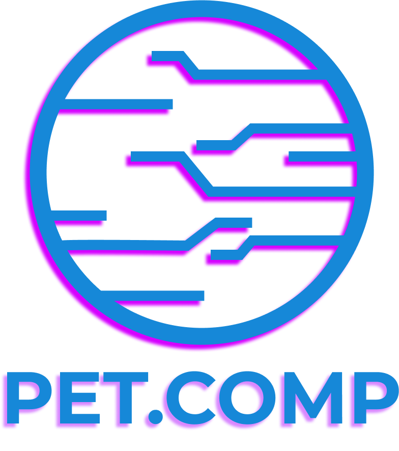

| Horário | Atividade | Carga Horária | Público Alvo | Vagas | Local | Responsável |
|---|---|---|---|---|---|---|
| 14:00h | Palestra - Modelagem computacional do coração de pacientes com cardiomiopatia dilatada | 2 horas | 56 | Sala 6-303 | Joventino | |
| 13:30h | Minicurso Canva | 4 horas | 20 | Lab. 6-203B | PET.COMP | |
| 13:30h | Introdução a Scratch | 2 horas | Alunos interessados em conhecer o básico da ideia de como programar | Lab. 6-203A | OKTOPLUS | |
| 14:00h | Minicurso Introdução a Python | 4 horas | 20 | Lab. 6-201B | GET UFJF | |
| 15:00h | Palestra Redes Sociais | 2 horas | 56 | Sala 6-303 | Delas para Elas |
| Horário | Atividade | Carga Horária | Público Alvo | Vagas | Local | Responsável |
|---|---|---|---|---|---|---|
| 13:30h | Palestra – Data Science no mercado de trabalho | 2 horas | 56 | Sala 6-206 | Prof. Henrique Barros Lopes | |
| 13:30h | Minicurso VirtualBox Revelado: Desvendando os Segredos da Virtualização | 4 horas | 12 | Lince 6-115 | Alexandre Martins De Deus |
| Horário | Atividade | Carga Horária | Público Alvo | Vagas | Local | Responsável |
|---|---|---|---|---|---|---|
| 13:30h | Mesa Redonda – Participação em Eventos | 2 horas | Auditório | Mediadora Gabriella | ||
| 13:30h | Minicurso Impressão 3D | 4 horas | 20 | Lab. 6-116 | PETENCAUT | |
| 13:30h | Introdução a C++ - Básico até String | 4 horas | Alunos interessados em conhecer o básico de C++, alunos do ensino técnico e ensino superior. | 20 | Lab. 6-201B | OKTOPLUS |
| 15:00h | FalaÊ | 2 horas | Auditório | PET.COMP |
| Horário | Atividade | Carga Horária | Público Alvo | Vagas | Local | Responsável |
|---|---|---|---|---|---|---|
| 13:30h | Minicurso Power Bi | 4 horas | 20 | Lab. 6-116 | Encautech | |
| 13:30h | Minicurso VirtualBox Revelado: Desvendando os Segredos da Virtualização | 4 horas | 12 | Lince 6-115 | Alexandre Martins De Deus | |
| 13:30h | Explorando C++ - Strings a Busca Binária | 4 horas | Alunos interessados em conhecer o básico de C++, alunos do ensino técnico e ensino superior. | 20 | Lab. 6-201B | OKTOPLUS |
| 13:30h | Oficina IoT com título "IoT por um mundo conectado" | 10 | Profª. Thabatta Araújo | |||
| 15:00h | Workshop - "Emponderada e Transformada" | 1 hora | Exclusivamente mulheres | 30 a 50 | Profª. Thabatta Araújo |
| Horário | Atividade | Carga Horária | Público Alvo | Vagas | Local | Responsável |
|---|---|---|---|---|---|---|
| 13:30h | Estrutura de dados em C++ | 4 horas | Alunos que concluíram o curso de APCO ou LLPA | 20 | Lab. 6-116 | OKTOPLUS |
| 13:30h | Minicurso Canva (Público Externo) | 4 horas | 20 | Lab. 6-203B | PET.COMP e Delas para Elas |
O PDF dos horários podem ser visualizados AQUI.
Para ficar por dentro das notícias e tudo que está rolando na Semana da Computação siga o PET.COMP nas redes sociais!
